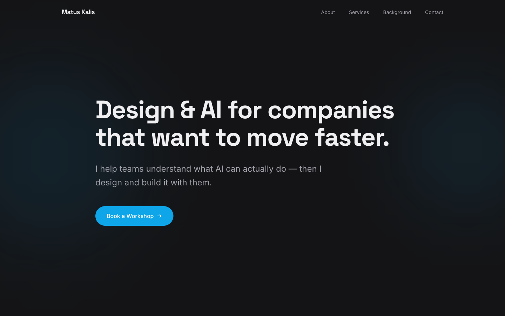

2026 · Shipped · Own brand
AI Consulting Microsite
A microsite for AI workshops and consulting, sitting on a subdomain of my personal site. Its entire job is to get a specific kind of visitor to book a workshop, so it makes one claim and offers one button.

Deliberately narrower than the main site
My personal site is dense and technical. This one is the opposite on purpose: it is aimed at someone deciding whether to bring in help, not at another developer. Same person, different room, so the design register changes completely.
- Left-aligned, not centred. Two lines of headline set left with a hard ragged edge — it reads as a statement rather than a slogan.
- One saturated colour on the whole page. The blue exists only on the button. Everything else is charcoal and off-white, so the single action is unmissable.
- A promise with a limit in it. "I help teams understand what AI can actually do" — the word "actually" is doing the work, because the objection in this market is inflated claims.
- Four nav items, no dropdowns. About, Services, Background, Contact. If a microsite needs a menu system, it isn't a microsite.
- Warm-shifted dark. The background is a very slightly blue-black rather than pure black, which keeps it from feeling like a terminal.